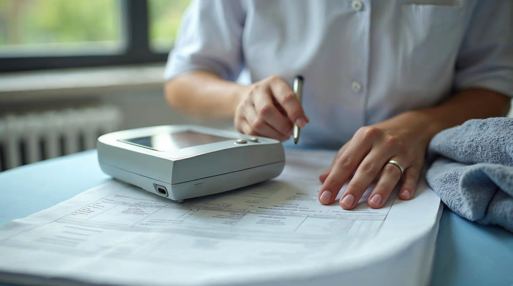
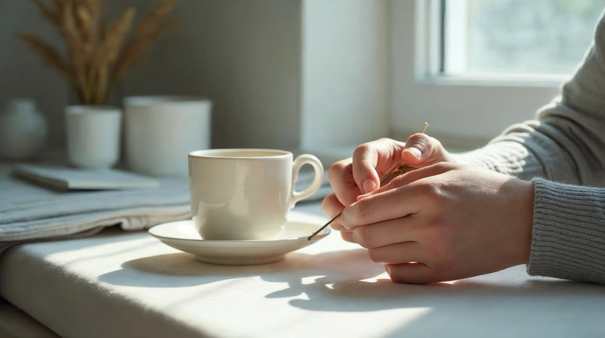
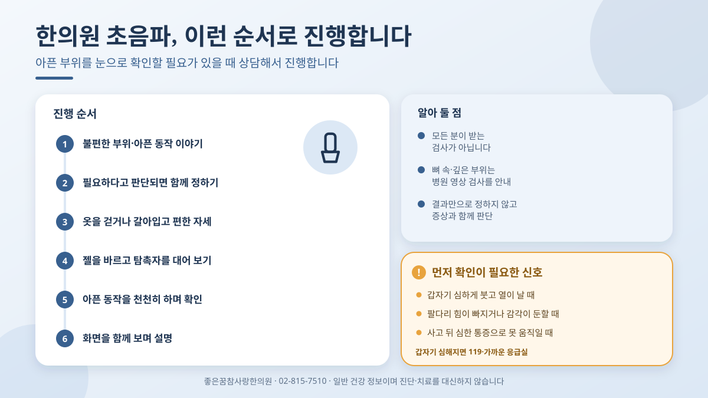

이종호 한의사 감수좋은꿈참사랑한의원 대표원장 (한의사 면허번호 19769)발행 2026-11-23 · 수정 2026-11-26
이 글의 차례
셔츠 단추를 채우다 어깨가 걸리는 아침, 계단 앞에서 무릎을 한 번 쓰다듬고 내려가는 저녁이 몇 주째 이어지면 속이 어떤지 눈으로라도 보고 싶어집니다. 초음파는 모든 분이 받는 검사가 아닙니다. 맥을 짚으며 이야기를 듣고 손으로 살핀 뒤, 화면으로 확인할 필요가 있을 때 설명드리고 함께 정해서 진행합니다.
어깨나 무릎, 손목이 아파서 오시면 초음파를 보느냐고 물으시는 분이 많습니다. 아픈 지 오래되면 혹시 큰 문제가 숨어 있지는 않은지, 이대로 두어도 되는지 걱정되는 게 당연하지요. 그래서 초음파를 언제 보고, 어떤 순서로 하고, 본 다음에 무엇을 하는지 처음부터 차근차근 적어 보겠습니다.
왜 초음파로 살피기도 할까요
제가 초음파를 진료실에 들인 이유는 단순합니다. 맥을 짚고 혀를 보고 손으로 만져 보는 진찰에 눈으로 보는 평가를 하나 더하면, 지금 이 몸에서 무슨 일이 일어나는지 조금 더 정확하게 이해할 수 있어서입니다. 상도동에서 진료를 시작한 뒤에도 근골격계 초음파를 따로 익혀 온 까닭입니다.
같은 어깨 통증이라도 힘줄이 붙는 자리의 문제인지, 근육이 넓게 굳은 것인지, 관절 주변이 부은 것인지에 따라 살필 방향이 달라집니다. 손끝으로 짐작한 것을 화면으로 한 번 더 보면, 제 짐작을 그 자리에서 다시 확인해 볼 수 있습니다.
초음파는 방사선을 쓰지 않고, 움직이는 동안의 모습을 바로 볼 수 있다는 점이 좋습니다. 팔을 옆으로 들 때만 아프다면 바로 그 동작을 하시게 하면서 힘줄 주변을 봅니다. 가만히 누워 찍는 사진으로는 알기 어려운 정보지요.
저희 한의원의 초음파는 근육·힘줄·인대와 관절 주변을 주로 보고, 필요하다고 판단되면 복부도 함께 살핍니다. 어느 쪽이든 진찰을 돕는 참고로 씁니다. 초음파로 보기 어려운 곳도 있다는 점은 뒤에서 따로 말씀드리겠습니다.
화면에 보이는 것과 아픈 것이 꼭 같지는 않습니다
영상에서 무언가 보인다고 그것이 곧 통증의 원인은 아닙니다. 반대로 화면이 깨끗한데 아플 수도 있습니다. 그래서 저는 초음파 소견 하나로 결론을 내리지 않고, 말씀과 손으로 살핀 것, 맥까지 함께 놓고 판단합니다.
MRI에서 디스크가 보인다는 말을 듣고 덜컥 겁이 나서 오시는 분께도 같은 말씀을 드립니다. 영상에 보이는 모습과 실제로 느끼는 통증은 늘 일치하지 않습니다. 언제, 어떤 자세에서 아픈지, 생활이 얼마나 불편한지를 함께 봐야 합니다.
사진을 찍었더니 무릎이 닳았다는 말을 듣고 마음이 무거워져 오시는 분도 많습니다. 저희 어머니 댁에는 문을 열면 삐걱거리는 오래된 자개장이 있습니다. 어머니는 아침마다 마른 수건으로 그 장을 닦으시는데, 가끔 열어 보면 아직 멀쩡합니다.
몸도 비슷하다고 생각합니다. 닳은 데가 보여도 둘레의 근육과 걸음을 잘 돌보면 쓸 수 있는 시간이 달라질 수 있습니다. 화면은 겁을 드리려고 보는 것이 아니라, 무엇을 돌볼지 함께 정하려고 보는 것입니다.
반대로 화면이 깨끗하다는 말을 들으면 안심이 되면서도, 그럼 왜 아픈지 더 답답해지실 수 있지요. 그럴 때는 움직이는 모양과 자세, 하루 중 오래 하는 일을 함께 살핍니다.
엑스레이나 MRI와는 무엇이 다를까요
엑스레이는 주로 뼈를 보는 검사입니다. 그래서 엑스레이에서 이상이 없다는 말을 듣고도 계속 아픈 분이 계십니다. 근육이나 인대, 힘줄 같은 부드러운 조직은 엑스레이에 잘 보이지 않을 수 있기 때문입니다.
초음파는 바로 그 부드러운 조직을 보는 데 쓰입니다. 대신 뼈 안쪽이나 척추 깊은 곳, 뇌처럼 소리가 통과하기 어려운 곳은 보기 어렵습니다. 깊은 구조를 자세히 봐야 할 때는 병원에서 MRI 같은 검사를 받게 됩니다.
어느 검사가 더 낫다기보다 보는 대상이 다르다고 이해하시면 됩니다. 무엇을 확인해야 하느냐에 따라 진찰과 초음파로 방향을 잡을 수 있을 때도 있고, 병원 검사가 먼저일 때도 있습니다. 그 순서를 진찰 뒤에 함께 정합니다.
먼저 이렇게 여쭙니다
화면을 켜기 전에 여쭙는 것이 훨씬 많습니다. 처음 오신 날에는 대개 이런 질문부터 드립니다.
- 언제부터, 어떤 동작에서 가장 아프신가요?
- 아픈 자리를 손가락 하나로 짚을 수 있나요?
- 붓기나 열감, 멍이 있나요?
- 다른 병원에서 받은 영상 검사가 있나요?
- 드시는 약, 특히 피를 묽게 하는 약이 있나요?
- 가장 먼저 편해지고 싶은 동작은 무엇인가요?
손가락 하나로 짚을 수 있는지 여쭙는 데는 이유가 있습니다. 아픈 자리가 좁고 분명할수록 초음파로 볼 곳을 정하기 쉽습니다. 넓게 퍼져 있다면 화면보다 몸 전체의 긴장과 자세를 먼저 살피는 편이 나을 때가 있습니다.

진행 순서
- 양손을 내어 주시면 맥부터 짚으며 아픈 곳과 동작을 여쭙습니다.
- 아픈 곳을 눌러 보고 움직여 본 뒤, 필요하면 초음파를 설명하고 함께 정합니다.
- 볼 부위를 드러내고 편한 자세로 눕거나 앉습니다.
- 피부에 젤을 바르고 탐촉자를 대어 힘줄과 근육, 관절 주변을 봅니다.
- 아픈 동작을 천천히 하시게 하며 다시 봅니다.
- 화면을 함께 보며 무엇을 확인했는지 설명드립니다.
순서 가운데 제가 가장 공을 들이는 것은 화면을 켜기 전입니다. 처음 오신 분이든 다시 오신 분이든 저는 모두 맥부터 짚습니다. 걸어오셔서 숨이 차면 잠시 쉬신 뒤에 짚습니다.
어깨가 아파 오셨어도 양손을 올려 봐 달라고 말씀드리고, 손목을 짚는 동안 잠은 어떤지, 식사 뒤 속은 편한지 여쭙습니다. 아플 때만 그 자리가 뜨겁다는 말씀처럼 조건이 붙은 이야기도 이때 한 번 더 여쭙고 듣습니다. 차트에 한 줄로 적으면 사라지기 쉬운 이야기라서요.
잠에서 깬 뒤 어깨가 아픈 건지, 어깨가 아파서 잠이 깨는 건지도 이때 여쭙니다. 겉보기에는 비슷한 두 문장이지만 밤에 겪으시는 일은 다릅니다. 어느 쪽이냐에 따라 화면에서 눈여겨볼 곳도 달라집니다.
그다음 아픈 곳을 직접 눌러 보고, 팔을 들어 보시게 하고, 서고 걷는 모습도 봅니다. 여기까지로 충분하면 초음파는 보지 않습니다. 화면으로 확인하는 것이 방향을 정하는 데 도움이 되겠다 싶을 때, 왜 보려는지 먼저 말씀드리고 함께 정합니다.
볼 부위를 드러내야 하니 소매나 바짓단을 걷기 쉬운 옷을 권하고, 부위에 따라 옷을 걷거나 갈아입으실 수 있습니다. 반지나 시계처럼 걸리는 물건은 미리 빼 두시면 편합니다.
피부에 젤을 바르고 작은 탐촉자를 대면 화면에 피부 아래 모습이 나타납니다. 가만히 있을 때 한 번 보고, 아픈 동작을 아주 천천히 하시게 하면서 다시 봅니다.
말로만 힘줄 주변이라고 하면 어디를 말하는지 잡히지 않는 경우가 많은데, 화면에서 짚어 드리면 한결 알아보기 쉽습니다. 내 몸 어디가 불편한지 알고 나면 집에서 조심할 동작도 더 잘 기억하십니다.
누르는 자리가 아프거나 동작이 버거우면 그 자리에서 바로 말씀해 주세요. 누르는 힘을 조절할 수 있습니다. 처음 오시는 날은 진찰 시간이 있어 다시 오실 때보다 오래 걸릴 수 있으니, 시간 여유를 두고 오시면 좋습니다.
부모님을 모시고 오셨다면 함께 설명을 들으셔도 좋습니다. 어디가 불편한지, 집에서 무엇을 지켜보면 되는지 같이 들어 두시면 나중에 이야기를 나누기가 한결 쉽습니다.
초음파를 본 다음에는
화면으로 본 내용은 진찰한 것과 함께 놓고 오늘 치료를 고르는 데 씁니다. 침, 약침, 추나, 체외충격파 가운데 지금 필요한 방법을 고르고, 왜 그 방법인지 먼저 설명드립니다. 가장 아픈 곳은 원장이 직접 치료하고, 그 밖의 불편한 곳은 직원이 물리치료로 이어서 살핍니다.
약침을 놓을 때 초음파를 함께 쓰기도 합니다. 깊거나 구조가 복잡한 부위는 화면으로 위치를 확인하며 시술하고, 모든 약침에 초음파를 쓰지는 않습니다. 위치를 보며 하더라도 멍이나 시술 부위 통증 같은 반응이 생길 수 있어 미리 설명드립니다.
약침을 앞두고 있다면 약이나 음식 알레르기, 드시는 약, 당뇨나 간·신장 질환, 임신 가능성을 먼저 알려 주세요. 시술 여부와 방법을 정하는 데 필요한 이야기입니다.
본 내용은 아픈 동작과 함께 기록해 둡니다. 화면에서 본 것과 그날 어떤 동작이 아팠는지가 같이 남아 있어야, 다음에 같은 자리를 다시 볼 때 무엇이 달라졌는지 비교할 수 있습니다.

알아 둘 점
초음파로 볼 수 있는 것과 볼 수 없는 것이 있습니다. 뼈 속이나 척추 깊은 곳, 신경계 질환처럼 초음파로 보기 어려운 부분의 확인이 필요하거나 더 정밀한 검사가 필요해 보이면, 이유를 설명드리고 영상 검사가 가능한 병원을 안내합니다.
한의원 초음파는 영상의학과의 정밀 검사를 대신하지 않습니다. 이미 받으신 검사가 있다면 판독지를 가져오세요. 판독은 영상의학과 판독지를 기준으로 참고하고, 검사를 새로 받고 오시면 그 결과와 이어서 함께 봅니다.
초음파만 따로 받을 수 있느냐는 질문도 받습니다. 초음파는 상담과 진찰 중에 필요하다고 판단될 때 함께 하는 검사라서, 불편한 점부터 말씀해 주시면 됩니다. 화면은 그 이야기를 확인하는 자리에서 켭니다.
화면을 사진으로 받을 수 있는지 물으시는 분도 계십니다. 설명을 위해 화면을 함께 보는 것이 중심이라, 따로 필요하시면 진료 때 말씀해 주세요. 화면에서 무엇을 보는지 더 궁금하시면 초음파 화면에서는 무엇을 보나요?에 조금 더 적어 두었습니다.
스스로 점검해 보세요
아래 가운데 몇 가지가 해당되는지 세어 보세요.
- 특정 동작에서만 같은 자리가 아프다
- 누르면 아픈 지점을 손가락으로 짚을 수 있다
- 아픈 쪽이 반대쪽보다 부어 보인다
- 두세 주 넘게 같은 불편이 이어지고 있다
- 아파서 자다가 깨는 날이 있다
- 그 동작 때문에 미루거나 못 하게 된 일이 생겼다
두세 가지가 겹친다면 진료 때 꼭 말씀해 주세요. 그렇다고 초음파를 꼭 봐야 한다는 뜻은 아닙니다. 무엇부터 살필지 정하는 데 쓰는 메모라고 생각하시면 됩니다.
예를 들면 이런 경우입니다
예를 들어 하루 종일 마우스를 쓰는 분이 손목 바깥쪽이 붓고 시큰하다면, 진찰 뒤 필요하다고 판단될 때 손목을 천천히 움직이게 하면서 힘줄 주변을 화면으로 함께 봅니다. 손가락이 걸리는 느낌이 있다면 그 동작도 같이 봅니다.
예를 들어 손주를 자주 안아 주시는 어르신이 무릎을 굽혔다 펼 때 앞쪽이 시큰하다고 하시면, 그 동작을 천천히 하시게 하며 아픈 자리를 살핍니다. 관절 자체보다 그 위쪽 근육이 불편한 경우도 있어 함께 봅니다.
예를 들어 허리가 아프면서 다리까지 저린 분이라면 이야기가 달라집니다. 허리 디스크나 척추 안쪽 신경은 초음파로 보기 어려워, 영상 검사가 가능한 병원을 먼저 안내할 수 있습니다. 초음파가 모든 통증의 답이 되지는 않습니다.
일상에서 먼저 해 볼 수 있는 것
진료 날까지 집에서 해 두시면 좋은 것들입니다.
- 아픈 동작을 무리해서 되풀이하지 않기
- 붓기가 있으면 쉬면서 조금 높게 올려 두기
- 아픈 동작을 휴대폰 영상으로 짧게 찍어 두기
- 진료 날은 볼 부위를 드러내기 쉬운 옷 입기
- 예전 검사 판독지를 한곳에 모아 두기
영상은 거창하지 않아도 됩니다. 아픈 동작을 한두 번 천천히 해 보는 모습이면 충분하고, 언제 어떻게 아픈지 보이면 말로 설명하기 어려운 부분이 금방 정리됩니다. 찍는 요령은 증상 사진이나 영상을 찍어 가면 도움이 되나요?를 참고해 보세요.
한의원에서 함께 살필 수 있는 경우
- 어깨·팔꿈치·무릎이 어떤 동작에서 아픈지 보고 싶은 경우
- 추나나 침을 시작하기 전에 상태를 보고 싶은 경우
- 병원 영상 결과와 지금 통증의 관계가 궁금한 경우
- 치료 중 아픈 동작이 달라졌는지 다시 보고 싶은 경우
좋은꿈참사랑한의원에서는 모든 분께 맥부터 짚으며 불편한 곳과 아픈 동작을 여쭙고, 손으로 살핀 뒤 필요하다고 판단될 때 초음파를 봅니다. 화면을 함께 보며 설명드리고 침·약침·추나·체외충격파 가운데 상태에 맞는 방법을 정하며, 깊은 부위 확인이 필요하면 병원 영상 검사를 안내합니다.
이렇게 기록해 오시면 상담이 쉬워집니다
- 아픈 부위와 가장 아픈 동작
- 통증이 시작된 날과 계기
- 병원에서 받은 영상 검사 판독지
- 복용 중인 약, 특히 피를 묽게 하는 약
- 아픈 동작을 찍은 짧은 영상
다른 병원 검사 결과를 어떻게 챙겨 오면 좋을지는 다른 병원에서 받은 검사 결과는 한의원에 어떻게 가져가면 되나요?에 정리해 두었습니다.
몇 주째 같은 동작에서 아프면, 속이 어떤지 모른다는 것 자체가 마음을 지치게 합니다. 화면을 함께 보는 시간이 그 막막함을 조금이라도 덜어 드리는 자리가 되었으면 합니다.
다음에 오시면 지난번 가장 아팠던 그 동작이 요즘 어떤지부터 여쭙겠습니다.
이런 증상은 먼저 확인이 필요합니다
- 넘어진 뒤 붓고 디딜 수 없거나, 관절이 붉고 뜨겁게 부으며 열이 나는 경우
- 팔다리에 힘이 빠지거나 감각이 둔해지는 경우
이런 신호가 있으면 한의원보다 가까운 병원이나 응급실을 먼저 찾으세요.

여쭙는 것
- 언제부터, 어떤 동작에서 가장 아프신가요?
- 아픈 자리를 손가락 하나로 짚을 수 있나요?
- 붓기나 열감, 멍이 있나요?
생활에서 해 볼 것
- 아픈 동작을 무리해서 되풀이하지 않기
- 붓기가 있으면 쉬면서 조금 높게 올려 두기
- 아픈 동작을 휴대폰 영상으로 짧게 찍어 두기
한의원에서 함께 살필 것
- 어깨·팔꿈치·무릎이 어떤 동작에서 아픈지 보고 싶은 경우
- 추나나 침을 시작하기 전에 상태를 보고 싶은 경우
- 병원 영상 결과와 지금 통증의 관계가 궁금한 경우
먼저 확인이 필요한 신호
- 넘어진 뒤 붓고 디딜 수 없거나, 관절이 붉고 뜨겁게 부으며 열이 나는 경우
- 팔다리에 힘이 빠지거나 감각이 둔해지는 경우
한눈에 보는 표
| 구분 | 핵심 |
|---|---|
| 여쭙는 것 | 언제부터, 어떤 동작에서 가장 아프신가요? 아픈 자리를 손가락 하나로 짚을 수 있나요? |
| 생활에서 해 볼 것 | 아픈 동작을 무리해서 되풀이하지 않기 붓기가 있으면 쉬면서 조금 높게 올려 두기 |
| 한의원에서 함께 살필 것 | 어깨·팔꿈치·무릎이 어떤 동작에서 아픈지 보고 싶은 경우 추나나 침을 시작하기 전에 상태를 보고 싶은 경우 |
| 먼저 확인이 필요한 신호 | 넘어진 뒤 붓고 디딜 수 없거나, 관절이 붉고 뜨겁게 부으며 열이 나는 경우 팔다리에 힘이 빠지거나 감각이 둔해지는 경우 |
자주 묻는 질문
초음파 검사는 아픈가요?
젤을 바르고 탐촉자를 피부에 대는 방식이라 대개 누르는 느낌 정도입니다. 아픈 자리를 지나거나 아픈 동작을 할 때는 불편할 수 있으니, 그때는 바로 말씀해 주세요.
시간과 비용은 얼마나 드나요?
볼 부위와 상태에 따라 달라 미리 정해 말씀드리기 어렵습니다. 걸리는 시간과 비용, 보험 적용은 방문 전 전화(02-815-7510)로 확인해 주세요.
모든 환자가 받나요?
아닙니다. 맥을 짚으며 이야기를 듣고 손으로 살핀 뒤, 화면으로 확인하는 것이 도움이 되겠다고 판단될 때만 상담해서 진행합니다.
한의원에서 초음파를 보면 병원 검사는 안 받아도 되나요?
그렇지 않습니다. 한의원 초음파는 진찰을 돕는 도구로, 영상의학과 정밀 검사를 대신하지 않습니다. 필요하면 영상 검사가 가능한 병원을 안내해 드립니다.
좋은꿈참사랑한의원은 재진 때 지난번 이야기부터 이어서 여쭙니다. 진료시간과 예약은 오시는 길에서 확인하세요.
어디서 상담받을 수 있나요?
좋은꿈참사랑한의원은 서울 동작구 만양로2길 2 신성빌딩 3층·5층(서울 동작구 상도동, 7호선 상도역 3번 출구 근처)에 있습니다. 한의사 3명(이종호 대표원장, 조영기 수석진료원장, 정원영 진료원장)이 진료합니다. 진료시간은 평일 09:30~20:00(점심 13:00~14:00), 토·일·공휴일 09:30~15:00이며, 방문 전 전화로 확인을 권합니다. 예약은 네이버 예약, 카카오톡 상담, 전화 02-815-7510로 받습니다.
이 글은 일반적인 건강 정보이며 개인의 진단이나 치료를 대신하지 않습니다. 증상이 있거나 복용 중인 약이 있다면 진료를 통해 확인하세요. 치료 효과는 개인마다 다를 수 있습니다.
작성 기준: 일반적으로 알려져 있는 건강 정보를 참고해 정리했습니다(대표원장 감수). 증상 기록은 1~2주 동안 하루 1회, 비슷한 시간에 적어 오시면 지난 상태와 비교하기 쉽습니다.